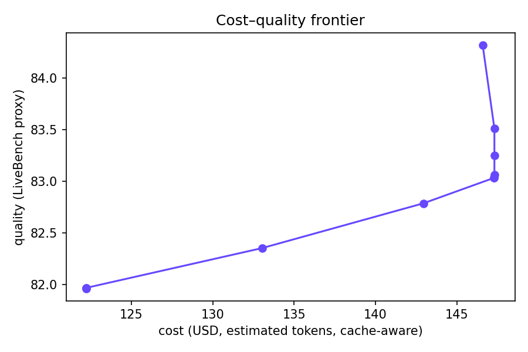

Viktor Challenge · TUM.ai · Build the Router
Objective
The trade-off we chose
The signal
What the router looks at
Structure in the traces
Shown on a real trace
The one chart
Cost–quality frontier
(held-out split, cache-aware)

Honesty
The off-policy estimate — and where it breaks
Method —
Cache trap —
Weakest point —
Close
Viktor challenge · TUM.ai